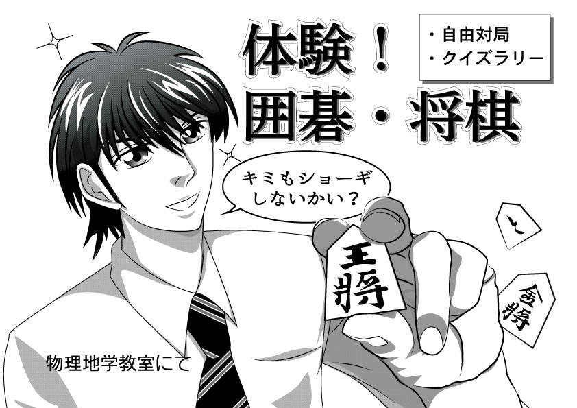

イラスト
イラストをはじめたきっかけ
イラストをはじめた要因は, もともと母親が漫画を描くのに熱中していた時期があり, イラストを描くのが上手かったことに憧れていたことと, 中学時代の委員会において, 広報委員という委員会に所属したことが挙げられます。 広報委員では, ポスターのイラストを描く機会があったのですが, そのイラストのあまりの酷さに絶望したことと, 意外と描いてみると楽しかったことが, 具体的なきっかけの一つとなりました。
それ以降, YouTubeやインターネットサイトで, イラストの描き方動画を熱心に見るようになり, 上手い人が良く行う楕円形に十字線を引いて描く手法について理解したり, 体のバランスについても理解するようになりました。 当時見ていたYouTubeチャンネルの一例を挙げると, WHICKさんやキャラメイク動画などが挙げられます。また, イラストコミュニケーションサービスpixivに挙げられたイラストの描き方資料も, よく参照していました。
高校に入ると, 中学生よりは, 比較的自由な環境となっていたので, あまり良くなかったかもしれませんが, 迷惑にならない範囲で, 放課の間とかに黒板にイラストを描いてみたり, それを友達と共有したりいて楽しんでいました。 また, 高校時代は囲碁・将棋部という部活動に入っていて, インドアかつ緩い雰囲気の部活動であったため, 練習の合間に黒板にイラストを描いたり, 勉強の内容を教えあったりといったことを行っているうちに, アウトプットの機会が得られ, 上達したものと思われます。
囲碁・将棋部というのは, イラストを利用する機会として, 年に1度の文化祭や新入生勧誘があり, その場面においては, パンフレットや広報誌に載せるイラストを描く機会に積極的に参加することとしていました。 その結果, 今までそこまで技術を磨かず, 遊びで描いてたものが, 真剣に取り組むこととなり, また, 納期に間に合わせるという体験や魅力的なイラストとは何かを考える良い機会となったと思います。 こうして, 以下に載せるようなパンフレットのイラストについては出来上がりました。
- 中学時代のイラスト, 酷いでしょう
イラスト紹介
高校時代に囲碁・将棋部, 修学旅行, 海外の友達へのプレゼントカードで描いたイラスト一覧
かなり下手ですが，良かったら，参考までに見てみてください。上手い方，いろいろ教えてくださると幸いです。
配置がめちゃくちゃですが，時間があれば，CSSグリッドで整列します。

- 新入生勧誘のパンフレット
- 新入生勧誘のパンフレット2
- 
- 囲碁・将棋部文化祭のパンフレット
- 囲碁・将棋部文化祭のパンフレット2
- 修学旅行のパンフレット
時間がなくて，ひどい出来具合
- アメリカの友達へのプレゼント
- 2020年の年賀状
かなり個性的
- 囲碁の色紙イラスト
好きな絵師紹介
基本的には，美麗志向である。